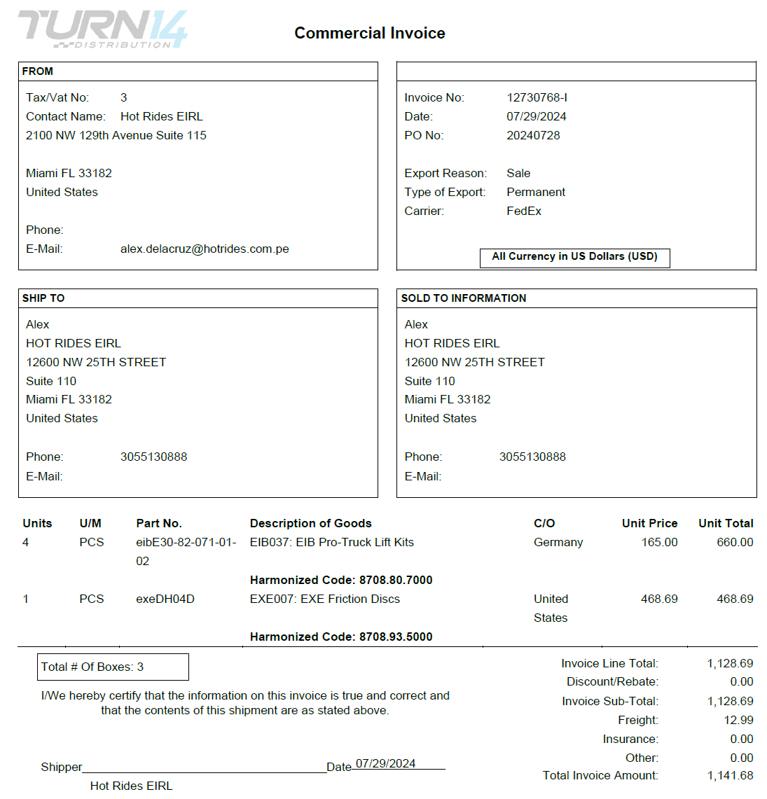
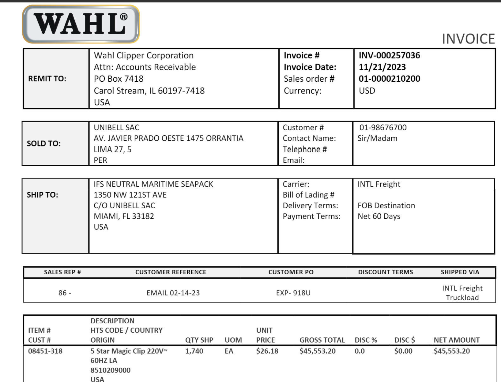
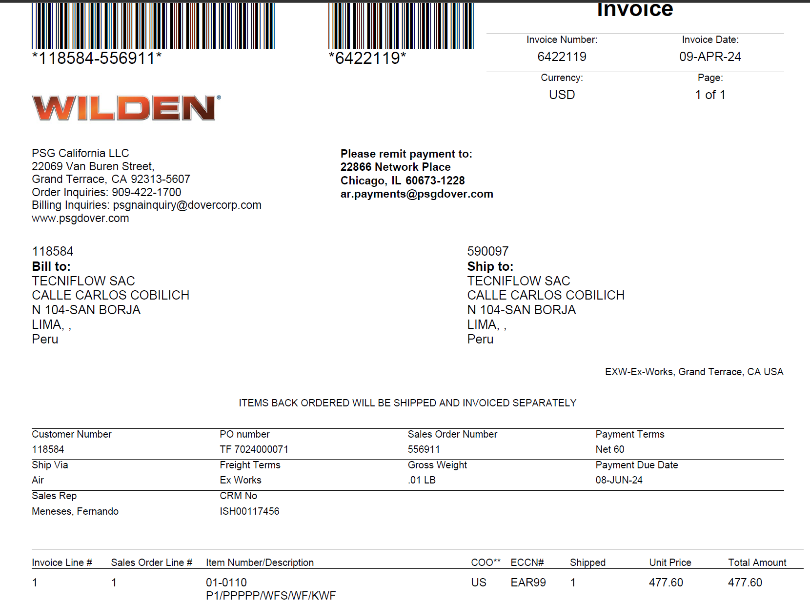
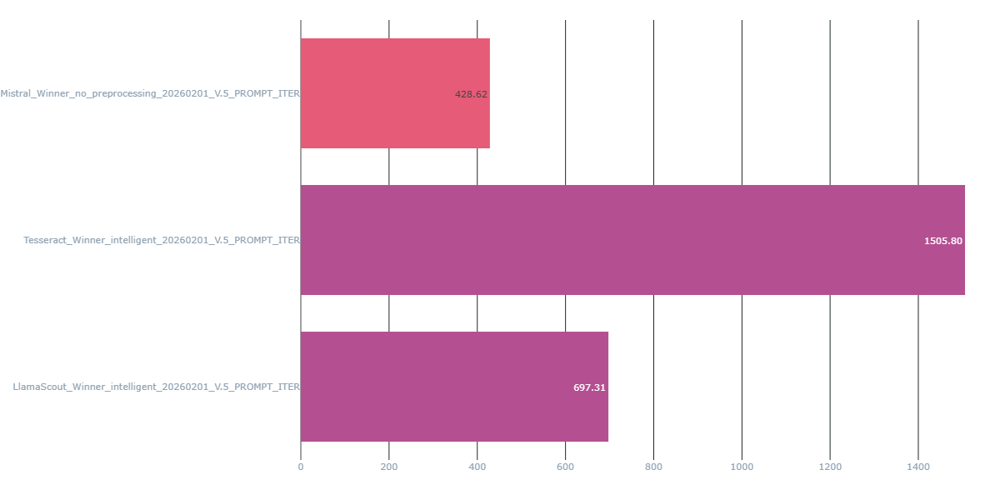
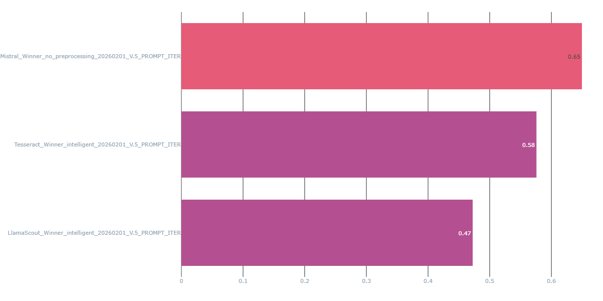

graph TD
Optuna[Optuna HPO Engine] -->|Suggère Paramètres| Prep[Pipeline Prétraitement]
Prep -->|Image Optimisée| OCR[Modèle OCR]
OCR -->|Résultats| Eval[Calcul F1-Score]
Eval -->|Feedback| Optuna
style Optuna fill:#e1f5fe,stroke:#01579b
style Prep fill:#fff3e0,stroke:#e65100
style Eval fill:#f1f8e9,stroke:#33691e
Facture OCR Project
Soutenance de Certification - Artefact School
Jean Luis Soto
2026-02-03
Introduction
Contexte du Projet
Problématique Métier - Entreprise SaaS ERP dans le secteur douanier (Pérou) - Traitement manuel de factures d’importation : lent et sujet aux erreurs - Échec de la solution précédente (Google Document AI) : coûts élevés, sur-apprentissage



Objectifs Techniques
Performance
- SLA : 50 factures < 5 min
- Précision > 90%
- Formats hétérogènes
Économie
- Réduction des coûts vs Document AI
- Flexibilité : aucun ré-entraînement par client
Partie 1/2: Cas Pratique
Sélection et Paramétrage du Service IA
Dispositif de Veille Technologique
Méthodologie de Recherche
- Revues techniques : Medium, Kaggle
- Dépôts de modèles : Hugging Face, Linux Foundation
- Solutions testées :
- Open Source : Tesseract, EasyOCR, Docling (IBM)
- Modèles innovants : Llama Maverick, DeepSeek OCR
- Solutions Cloud : Document AI, Mistral AI
Inventaire et Benchmark
| Type | Solution | Précision (F1) | Vitesse | Coût |
|---|---|---|---|---|
| OS | Tesseract | ~60% | Rapide | Gratuit |
| VLM | Llama 3 (Groq) | 90% | Ultra-Rapide | Faible |
| VLM | Mistral | 95% | Moyenne | Moyen |
Décision : Mistral retenu pour sa robustesse sur formats complexes
Optimisation Scientifique du Parametres

Paramètres optimisés avec Optuna : Contraste, Débruitage, CLAHE, Deskewing
Partie 2/2: Mise en Situation
Industrialisation et Déploiement
Architecture Globale
graph TB
subgraph GitHub
Code[Code Source]
Exp[Expérimentations]
end
subgraph MLflow [MLflow Cloud]
Registry[Model Registry]
Metrics[Métriques]
end
subgraph GCP
API[FastAPI Backend]
Frontend[Streamlit App]
end
Code -->|CI/CD| MLflow
Exp -->|Log| MLflow
MLflow -->|Load Model| API
API -->|JSON| Frontend
style MLflow fill:#e1f5fe
style GCP fill:#fff3e0
Cycle de Vie MLOps
- GitHub : Centralisation du code source.
- MLflow : Gestion du cycle de vie (Tracking & Registry).
- GCP : Infrastructure de production (Backend/Frontend).
- Découplage : L’API consomme uniquement les versions “Production”.
Structure Technique du Code
Organisation Modulaire
data_preprocessing/: 3 stratégies (Baseline, Intelligent, Comprehensive)models/: Tesseract, Mistral, Llamaevaluations2.py: Métriques rigoureuses (CER, WER, F1)ocr_pipeline.py: Wrapper MLflow (PythonModel)api.py: FastAPI + Chargement dynamique
Monitoring MLflow : Métriques Clés
Métriques Alignées avec le Business
- F1-Score global : Indicateur de qualité (objectif > 90%)
- Latence P95 : Respect du SLA (< 6s/facture)
- Coût par 1000 factures : Rentabilité vs Document AI


Évaluation Rigoureuse
Métriques Complémentaires
- Accuracy : Champs fixes (ID, date)
- CER/WER : Qualité de transcription textuelle
- F1 Fuzzy Matching : Tolérance aux variantes (“Câble” vs “Cable”)
Défis Rencontrés
- Fragmentation des articles
- Multilinguisme
- Ambiguïté sémantique
API REST : Chargement Dynamique
FastAPI + MLflow
MODELS_CACHE = {}
@app.post("/predict_mlflow")
async def predict_mlflow(file: UploadFile, model_uri: str):
if model_uri not in MODELS_CACHE:
MODELS_CACHE[model_uri] = mlflow.pyfunc.load_model(model_uri)
model = MODELS_CACHE[model_uri]
results = await run_in_threadpool(lambda: model.predict([file_path]))
return {"results": results}✅ Agnostique du modèle : changement de version sans redéploiement
Intégration Streamlit
sequenceDiagram
participant User
participant Streamlit
participant API
participant MLflow
User->>Streamlit: Upload PDF
Streamlit->>API: POST /predict_mlflow
API->>MLflow: Load Model
MLflow-->>API: Model Object
API->>API: predict(pdf)
API-->>Streamlit: JSON Structured
Streamlit->>User: Display + Filters
Démonstration Prévue
Composants à Démontrer
- ✅ Upload d’une facture via Streamlit
- ✅ Appel API FastAPI + inspection JSON
- ✅ Consultation MLflow (métriques de l’inférence)
- ✅ Trigger de déploiement (Git Push → Cloud Run)
Conclusion
Impact et Perspectives
Résultats Obtenus
- SLA respecté : 50 factures en ~4.5 minutes ✅
- Précision : F1 > 95% (Mistral) ✅
- Coûts réduits vs Document AI ✅
Évolutions Futures
- Orchestration via Apache Airflow
- Amelioration Modele
Merci de votre attention
Questions ?